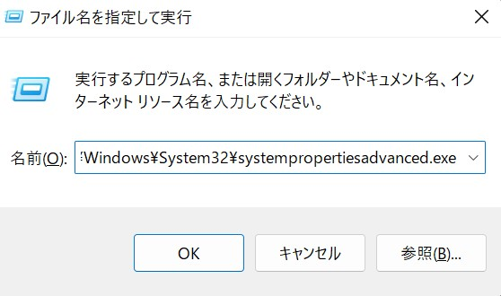

sbtをインストールする
現実のScalaアプリケーションでは、Scalaプログラムを手動でコンパイル1することは非常に稀で、標準的なビルドツールであるsbtというツールを用いることになります。ここでは、sbtのインストールについて説明します。
SDKMAN!のインストール
ここでは、sbtとJavaのいずれもSDKMAN!を利用したインストール方法を紹介します。 Mac OSやLinuxの場合、SDKMAN!は以下のコマンドでインストールできます。
$ curl -s "https://get.sdkman.io" | bash # SDKMAN!のインストール
$ source "$HOME/.sdkman/bin/sdkman-init.sh" # SDKMAN!の初期化（shellの再起動でも可）
$ sdk version # パスが通っているかの確認
Windowsの場合もWSLから同様の方法でインストールすることが可能です。
Javaのインストール
Scala 2.12や2.13ではJava 8以降が必須なので、もしJavaがインストールされていなければ、まずJavaをインストールしましょう。 ScalaとJavaのそれぞれのバージョンの互換性に関しては、以下のScala公式サイトのページを見てください。
https://docs.scala-lang.org/overviews/jdk-compatibility/overview.html
ここでは、先ほどインストールしたSDKMAN!を利用する方法を紹介します。2
$ sdk list java # インストールできるJavaの一覧を確認
# sdk install java <Identifier> # <Identifier> の部分は上記のコマンドで確認した中からインストールしたいものを入れる
$ sdk install java 11.0.15-tem # 例
$ java -version # Javaがインストールされているかの確認（Java8以前の場合）
$ java --version # Javaがインストールされているかの確認（Java11以降の場合）
Mac OS, Linux, WSL（Windows） の場合
最初にインストールしたSDKMAN!を利用してsbtをインストールします。
$ sdk install sbt # sbtのインストール
$ which sbt # sbtがインストールされているかの確認
とすれば、sbtがインストールできます。
Homebrewを利用する方法（Mac OS）
Homebrewを用いる方法でも可能です。
$ brew install sbt
でインストールでき、楽ですが、新しすぎるJDKがインストールされてしまうという問題があります。 https://github.com/scala-text/scala_text/issues/566
Windowsの場合（WSL以外）
WindowsでWSLを利用しない場合は、以下の方法でsbtをインストールすることができます。
Windows公式のwingetコマンド、あるいはchocolateyコマンドを使ってインストールすると楽です。
wingetを使う場合はWindows Powershellを開いてください。winget searchコマンドで最新のバージョンを確認できます。
winget search sbt
sbt sbt.sbt <latest version> winget
あとはwinget install sbt -v <version>コマンドで指定したバージョンのsbtをインストールできます。
chocolateyはWindows用のパッケージ マネージャで活発に開発が行われてます。chocolatey のパッケージにはsbtのものもあるので、
> choco install sbt
とすればWindowsにsbtがインストールされます。
Windows/Mac OSの場合で、シェル環境でsbtと入力するとバイナリのダウンロードが始まればインストールの成功です。sbtがないと言われる場合、環境変数へsbtへのPATHが通っていないだけですので追加しましょう。Windowsの環境変数は「システムのプロパティ」から編集できます。
Windowsキーとrキーを同時に押してC:\Windows\System32\systempropertiesadvanced.exeを入力します。

これが上手くいかない場合は、Windowsキーとrキーを同時に押し、sysdm.cplを入力して「システムのプロパティ」画面を開きます。
「システムのプロパティ」の「詳細設定」のタブを開き、ウィンドウの下の方にある「環境変数」ボタンを押して環境変数の設定画面を開きます。
環境変数にPATHが存在する場合は、PATHを編集してsbtのインストール先（例えばC:\sbt\bin）を追加します。環境変数にPATHが存在しない場合は新しくPATH環境変数を追加して同じくsbtのインストール先を指定します。
REPLとsbt
これからしばらく、REPL（Read Eval Print Loop）機能と呼ばれる対話的な機能を用いてScalaプログラムを試していきますが、それは常にsbt consoleコマンドを経由して行います。
sbt consoleを起動するには、WindowsでもMacでも
$ sbt console
と入力すればOKです。成功すれば、
[info] Loading global plugins from /Users/.../.sbt/1.0/plugins
[info] Set current project to sandbox (in build file:/Users/.../sandbox/)
[info] Updating {file:/Users/.../sandbox/}sandbox...
[info] Resolving org.fusesource.jansi#jansi;1.4 ...
[info] Done updating.
[info] Starting scala interpreter...
[info]
Welcome to Scala version 2.13.16 (Java HotSpot(TM) 64-Bit Server VM, Java 1.8.0_45).
Type in expressions to have them evaluated.
Type :help for more information.
scala>
のように表示されます。sbt consoleを終了したい場合は、
scala> :quit
と入力します。なお、sbt consoleを立ち上げる箇所には仮のディレクトリを掘っておくことをお勧めします。sbtはカレントディレクトリの下にtargetディレクトリを生成してディレクトリ空間を汚してしまうからです。
ちなみに、このとき起動されるScalaのREPLのバージョンは現在使っているsbtのデフォルトのバージョンになってしまうので、こちらが指定したバージョンのScalaでREPLを起動したい場合は、同じディレクトリに build.sbtというファイルを作成し、
scalaVersion := "2.13.16"
としてやると良いです。この*.sbtがsbtのビルド定義ファイルになるのですが、今はREPLに慣れてもらう段階なので、この.sbtファイルの細かい書き方についての説明は省略します。
sbtのバージョンについて
この“sbtのバージョンについて”は、最新版を正常にインストールできた場合は、読み飛ばしていただいて構いません。
sbtはsbt --versionもしくはsbt --launcher-versionとするとversionが表示されます3。このテキストでは基本的にsbt 1.x4がインストールされている前提で説明していきます。
1.x系であれば基本的には問題ないはずですが、無用なトラブルを避けるため、もし過去に少し古いバージョンのsbtをインストールしたことがある場合は、できるだけ最新版を入れておいたほうがいいでしょう。また、もし0.13系以前のversion（0.13.16など）が入っている場合は、色々と動作が異なり不都合が生じるので、その場合は必ず1.x系の最新版を入れるようにしてください。
1. ここで言う"手動で"とは、scalacコマンドを直接呼び出すという意味です ↩
2. 例では、Temrin（Eclipse）を利用していますが、もしあなたの環境がM1 MacかつJava11以前を利用している場合、 M1対応されているZulu（Microsoft）を利用した方が多少速いかもしれません。 ↩
3. ハイフンは1つではなく2つなので注意。versionの詳細について知りたい場合は、こちらも参照。 https://github.com/scala-text/scala_text/issues/122 ↩
4. 具体的にはこれを書いている2024年12月時点の最新版であるsbt 1.10.7。 ↩